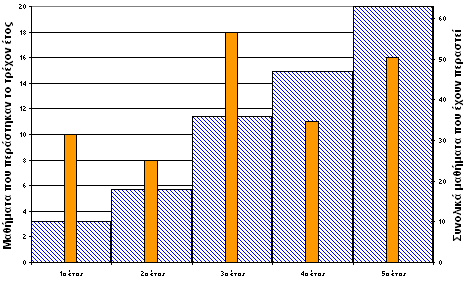

| Αποφοίτηση στα 5 χρόνια ακριβώς |
Κάποια παραπάνω πράγματα για την διπλωματική μπορεί να βρει κανείς στα παρακάτω links:
Τα χρόνια στο ΕΜΠ πέρασαν γρήγορα όπως κάθε τι ωραίο. Είχα την ευχαρίστηση να αλλάξω τόσες φορές και τόσο ριζικά κατά την διάρκεια αυτών των χρόνων ζώντας έτσι, πολλές διαφορετικές πλευρές του Πολυτεχνείου μας. Highlights ήταν το ταξίδι στο CERN, οι συμμετοχή στο ερευνητικό πρόγραμμα Νέστωρ, η πρακτική άσκηση και οι πολλές επαγγελματικές εμπειρίες οι οποίες ακολούθησαν. Αξέχαστα θα μου μείνουν τα 3 parties ΣΕΜΦΕ στων οποίων τη διοργάνωση είχα αρκετά μεγάλη συμμετοχή και σίγουρα τα laser effects του τρίτου με την ευγενική χορηγία του... τομέα Φυσικής! Τώρα όσο για τα μαθήματα, νομίζω ότι το παρακάτω διάγραμμα δίνει το σύνολο της πληροφορίας που θα ήθελε κανείς να γνωρίζει. Η παρατήρηση που μπορεί να κάνει κανείς είναι ότι ο ετήσιος "τζίρος" κυμαίνεται από 8 έως 18 μαθήματα, όπου 18 μαθήματα είναι κοντά το 1/3 της σχολής. Επίσης στο τρίτο έτος πέρασα τόσα μαθήματα, όσα στο πρώτο και το δεύτερο μαζί. Αυτά ελπίζω να τα κρατήσουν όσοι θεωρούν ότι έχουν μείνει κάπως πίσω για να μην απογοητεύονται.  Αν ήθελα να συνοψίσω σε τρεις συμβουλές τη "γενική" μεθοδολογία για να περάσει κανείς καλά φοιτητικά χρόνια στο ΕΜΠ και να βγει στην ώρα του θα έλεγα:
Το 1 είναι "μπηχτή" για όσους περιμένουν την σωτηρία τους από ένα κόμμα, έναν καθηγητή, την αλλαγή ενός ονόματος, την ένταξη στο ΤΕΕ η οτιδήποτε άλλο. Σε αυτόν τον κόσμο δυστυχώς (και ιδιαίτερα μετά την σχολή) ο καθένας είναι μόνος του. Κανένας "τρίτος" δεν θα σε σώσει. Ούτε τα σωματεία, ούτε τα επαγγελματικά δικαιώματα θα ψάξουν να σου βρουν δουλειά, αν αυτό σε ενδιαφέρει. Ο κάθε ένας μας προκειμένου να πετύχει κάτι μικρό ή μεγάλο θα πρέπει να ανακαλύψει και να αναδείξει τη μοναδικότητά του προκειμένου να ξεχωρίσει και να πετύχει τον στόχο του. Το 2 προϋποθέτει τόλμη. Το κυριότερο όμως που χρειάζεται είναι ενημέρωση. Κάθε μέρα του χρόνου κάπου έχει "εκπτώσεις". Αν βρίσκεσαι στο σωστό μέρος την σωστή στιγμή θα πετύχεις θαύματα με μικρή προσπάθεια. Για το 3... ουδέν σχόλιο! Έτσι λοιπόν, μία μέρα πριν να κλείσει το ge99149 account μου, θα "κλείσω" το ΕΜΠ έτσι όπως το άρχισα... με πολλή αγάπη,
|